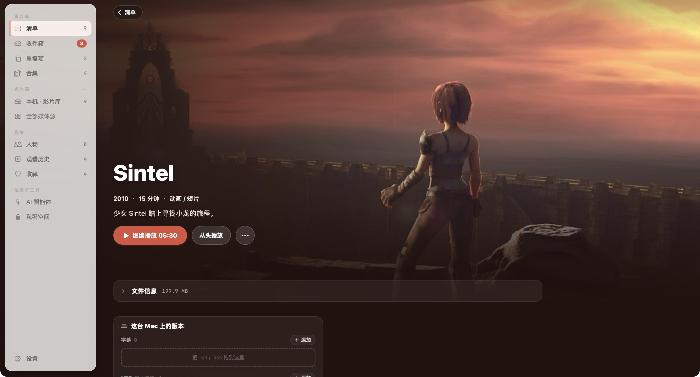
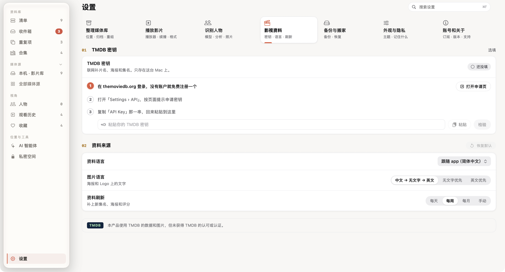
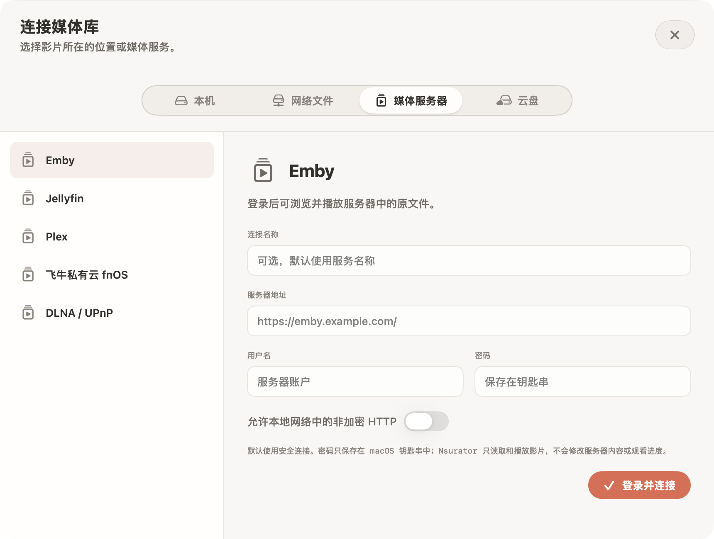

第一次打开 Nsurator，不必先整理几百部电影。选一个文件夹、放入几部熟悉的影片，先走通“出现在清单里 → 资料正确 → 可以播放”这条路径，再把方法用到整个收藏。
- 准备影片与本地海报
- 理解三种资料来源
- 核对电影页，再开始播放
先从一部电影开始
在「设置 → 整理媒体库」确认本地影片库与收件箱的位置。已整理好的影片放进影片库；刚下载、还需要核对的文件，先留在收件箱。两处各司其职，之后的归档也更容易看清会移动哪些文件。
如果你已经有 Kodi 等工具整理过的电影，保留影片旁的 NFO、海报与背景图即可。NFO 是记录片名、年份、简介等信息的小文件，并不是视频本身。对于一部电影一个文件夹的结构，可以像下面这样放置：
Sintel (2010)/
Sintel.2010.mp4
movie.nfo
poster.jpg
fanart.jpg这里的 poster.jpg 用作竖版海报，fanart.jpg 用作横版背景。一个文件夹里混放多部电影时，优先采用与视频同名的资料文件和图片，例如 Sintel.2010.nfo、Sintel.2010-poster.jpg，避免它们被误认为整个文件夹共用的资料。
选好“资料从哪来”
回到「清单」，在来源菜单中打开「加入清单的文件夹…」，按文件夹选择资料来源。你可以让整理好的收藏坚持本地资料，也可以让还没整理的文件夹联网补全。
| 选择 | 适合什么情况 | 会怎样处理 |
|---|---|---|
| 本地优先 | 已经有部分 NFO 和图片 | 优先采用本地内容，再用 TMDB 补充缺少的资料。 |
| TMDB 优先 | 希望主要采用在线影视资料 | 优先采用 TMDB；缺少的内容可由本地资料补充。 |
| 只用本地 | 资料已齐全，或不想联网识别 | 从文件名、NFO 和本地图片建立资料，不发起 TMDB 查询。 |
左右滑动表格，查看完整说明。
本套截图选择了「只用本地」，海报、剧照和简介都来自提前准备的开放电影素材。因此，不填 TMDB 密钥也能得到完整的演示海报墙；这不代表所有文件夹都能自动获得同样丰富的资料。
打开电影页，检查三件事
在清单右上方切换为海报墙，双击电影海报进入详情页。先核对片名和年份，再看简介是否对应，最后确认下面关联的是你要播放的文件。

遇到同名电影或错误年份时，先修正资料匹配，再进行批量归档。否则，错误的片名也可能进入整理后的目录。对于只用本地的文件夹，检查 NFO 中的标题、年份和图片名称；希望联网寻找正确条目时，则先确认该文件夹允许使用 TMDB。
点一次播放，确认真正打开了对应影片。完成这一步，再陆续扩充文件夹，比一次导入全部收藏后处理混乱的匹配更轻松。
需要更多资料，再接入在线来源
打开「设置 → 影视资料」，按照页面指引填写你自己的 TMDB 密钥并检验。资料语言决定片名、简介等文字的偏好；图片语言影响海报和标题图片的挑选顺序，两者可以分别设置。

如果影片已经由 Emby、Jellyfin 或 Plex 管理，可从「媒体源 → 新增位置 → 媒体服务器」选择对应服务，按表单填写服务器地址和账户。这个入口用于浏览服务器里的内容，与给本地电影补充海报是两件事。

步骤与界面依据 2026 年 9 月的本地版本核对。部分收藏与续播进度为演示数据，图片来源见素材署名。